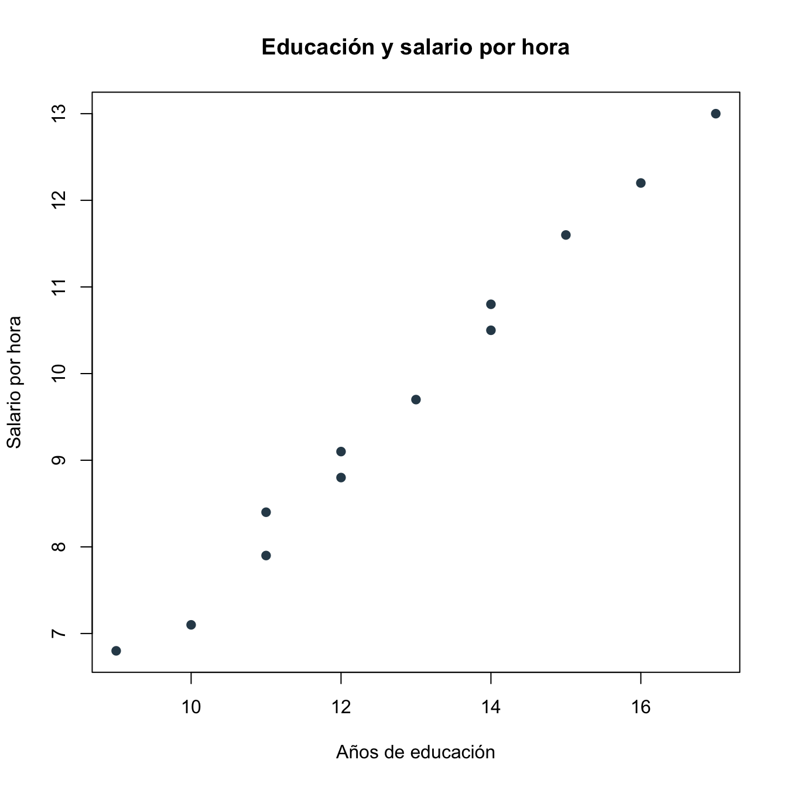
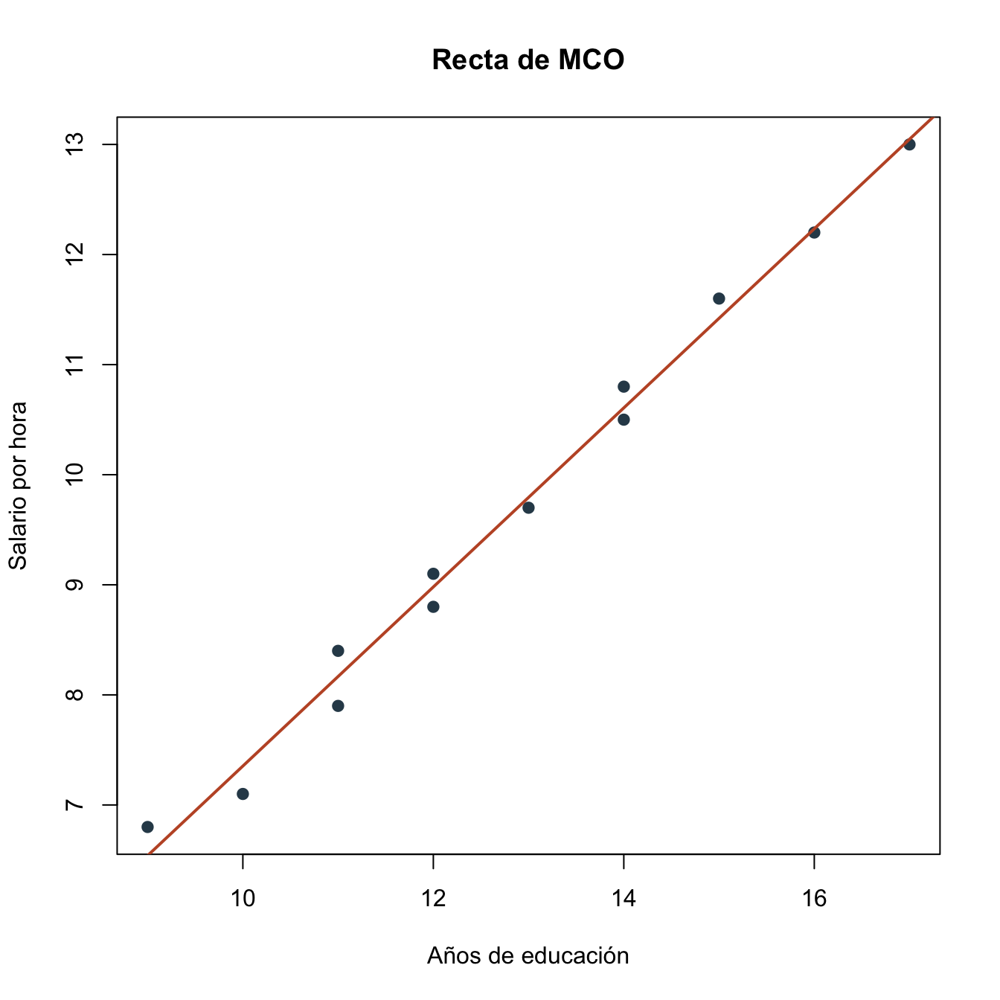

Capítulo 3 Regresión lineal: práctica
3.1 Objetivos de la práctica
Al finalizar esta práctica podrás:
- Estimar una regresión lineal simple en R, Stata y Python.
- Identificar la pendiente, el intercepto, los errores estándar y el \(R^2\).
- Interpretar los resultados sin confundir asociación con causalidad.
- Preparar el mismo ejercicio para correrlo en Google Colab.
3.2 Pregunta aplicada
Queremos estudiar la relación entre años de educación y salario por hora. La pregunta empírica es:
¿Las personas con más años de educación tienden a tener un salario por hora más alto en esta muestra?
La regresión que estimaremos es:
\[ \text{salario\_hora}_i = \beta_0 + \beta_1 \text{educacion}_i + \epsilon_i. \]
En esta práctica el objetivo es descriptivo: aprender a estimar e interpretar una recta. No vamos a concluir que un año adicional de educación causa exactamente el cambio estimado en salarios.
3.3 Datos
Usaremos una base pequeña y reproducible. Cada fila representa una persona.
| educacion | salario_hora |
|---|---|
| 9 | 6.8 |
| 10 | 7.1 |
| 11 | 7.9 |
| 11 | 8.4 |
| 12 | 8.8 |
| 12 | 9.1 |
| 13 | 9.7 |
| 14 | 10.5 |
| 14 | 10.8 |
| 15 | 11.6 |
| 16 | 12.2 |
| 17 | 13.0 |

Figura 3.1: Relación entre educación y salario por hora
3.4 Estimación en R
En R, la función central para estimar una regresión lineal es lm().
#>
#> Call:
#> lm(formula = salario_hora ~ educacion, data = datos_rl)
#>
#> Residuals:
#> Min 1Q Median 3Q Max
#> -0.26700 -0.12563 -0.04099 0.18255 0.25990
#>
#> Coefficients:
#> Estimate Std. Error t value Pr(>|t|)
#> (Intercept) -0.7810 0.3209 -2.434 0.0352 *
#> educacion 0.8135 0.0246 33.071 1.51e-11 ***
#> ---
#> Signif. codes: 0 '***' 0.001 '**' 0.01 '*' 0.05 '.' 0.1 ' ' 1
#>
#> Residual standard error: 0.1993 on 10 degrees of freedom
#> Multiple R-squared: 0.9909, Adjusted R-squared: 0.99
#> F-statistic: 1094 on 1 and 10 DF, p-value: 1.508e-11Podemos guardar los resultados principales en una tabla más limpia:
| termino | estimacion | error_estandar | t | p_valor |
|---|---|---|---|---|
| (Intercept) | -0.781 | 0.321 | -2.434 | 0.035 |
| educacion | 0.813 | 0.025 | 33.071 | 0.000 |

Figura 3.2: Recta estimada por mínimos cuadrados ordinarios
3.5 Interpretación
La pendiente estimada es aproximadamente \(0.813\). En esta muestra, una persona con un año adicional de educación tiene, en promedio, un salario por hora observado alrededor de \(0.813\) unidades mayor.
Esta interpretación es descriptiva. Para leer la pendiente como efecto causal de educación sobre salario tendríamos que justificar que los años de educación no están correlacionados con determinantes no observados del salario, como habilidad, redes, tipo de ocupación o experiencia.
El intercepto estimado es aproximadamente \(-0.781\). En este ejemplo no tiene una interpretación económica directa útil, porque cero años de educación está fuera del rango observado de la muestra.
El \(R^2\) es:
#> [1] 0.9909398Esto significa que la regresión lineal explica una proporción alta de la variación observada del salario por hora en esta base pequeña. En aplicaciones reales, un \(R^2\) alto no garantiza causalidad ni ausencia de sesgo.
3.6 Estimación en Stata
El mismo ejercicio en Stata se puede correr así:
clear
input educacion salario_hora
9 6.8
10 7.1
11 7.9
11 8.4
12 8.8
12 9.1
13 9.7
14 10.5
14 10.8
15 11.6
16 12.2
17 13.0
end
scatter salario_hora educacion
reg salario_hora educacion
predict yhat, xb
twoway (scatter salario_hora educacion) ///
(line yhat educacion, sort)Los resultados clave esperados deben coincidir con los de R:
| Término | Estimación aproximada | Interpretación |
|---|---|---|
| Constante | -0.781 | Predicción cuando educación es cero; aquí no es substantivamente útil. |
| Educación | 0.813 | Diferencia promedio en salario por hora asociada con un año adicional de educación. |
| \(R^2\) | 0.991 | Proporción de variación muestral explicada por la recta. |
3.7 Estimación en Python y Google Colab
Para correr esta práctica en Google Colab, abre un cuaderno nuevo y ejecuta primero:
# Si estás en Google Colab, ejecuta esta celda primero
!pip -q install pandas numpy statsmodels matplotlib seabornLuego estima el modelo:
import pandas as pd
import statsmodels.api as sm
import matplotlib.pyplot as plt
import seaborn as sns
datos_rl = pd.DataFrame({
"educacion": [9, 10, 11, 11, 12, 12, 13, 14, 14, 15, 16, 17],
"salario_hora": [6.8, 7.1, 7.9, 8.4, 8.8, 9.1, 9.7, 10.5, 10.8, 11.6, 12.2, 13.0]
})
X = sm.add_constant(datos_rl["educacion"])
y = datos_rl["salario_hora"]
modelo = sm.OLS(y, X).fit()
print(modelo.summary())Para graficar:
sns.regplot(
data=datos_rl,
x="educacion",
y="salario_hora",
ci=None,
scatter_kws={"color": "#2f4858"},
line_kws={"color": "#C0562F"}
)
plt.xlabel("Años de educación")
plt.ylabel("Salario por hora")
plt.title("Recta de MCO")
plt.show()Los resultados principales esperados en Python deben ser:
| Término | Estimación aproximada | Error estándar aproximado |
|---|---|---|
| Constante | -0.781 | 0.321 |
| Educación | 0.813 | 0.025 |
| \(R^2\) | 0.991 |
3.8 Comparación R, Stata y Python
Si los datos son los mismos y el modelo es el mismo, R, Stata y Python entregan los mismos coeficientes de MCO. Lo que cambia es la sintaxis, el formato de la tabla y las funciones auxiliares para graficar o extraer resultados.
La equivalencia conceptual es:
| Tarea | R | Stata | Python |
|---|---|---|---|
| Estimar MCO | lm(y ~ x, data = datos) |
reg y x |
sm.OLS(y, X).fit() |
| Ver resultados | summary(modelo) |
salida de reg |
modelo.summary() |
| Predicción ajustada | fitted(modelo) |
predict yhat, xb |
modelo.fittedvalues |
| Residuos | resid(modelo) |
predict ehat, resid |
modelo.resid |
3.9 Errores frecuentes en la práctica
- Interpretar automáticamente la pendiente como causal. En esta práctica la pendiente describe una asociación en la muestra. Para hablar de causalidad necesitamos discutir identificación.
- Olvidar las unidades. La pendiente está en unidades de salario por hora por cada año adicional de educación. Si cambia la unidad de \(y\) o de \(x\), cambia la escala del coeficiente.
- Leer literalmente el intercepto. El intercepto es la predicción cuando educación es cero. Si cero está fuera del rango de los datos, puede no tener interpretación substantiva.
- Comparar software con datos distintos. R, Stata y Python solo entregan los mismos coeficientes si usan exactamente la misma base, las mismas variables y la misma muestra.
- Confundir buen ajuste con buen modelo. Un \(R^2\) alto no garantiza causalidad, ni descarta variables omitidas, no linealidades o problemas de medición.
3.10 Ejercicios computacionales
- Cambia el último salario de 13.0 a 16.0. ¿Qué ocurre con la pendiente y con el \(R^2\)?
- Agrega una persona con 18 años de educación y salario por hora de 10.0. ¿Cómo cambia la recta?
- Calcula manualmente los residuos en R usando
datos_rl$salario_hora - fitted(modelo_rl). - Repite el ejercicio en Stata y Python. Verifica que los coeficientes sean iguales.
- Escribe un párrafo corto explicando por qué esta regresión no demuestra por sí sola que educación cause mayor salario.